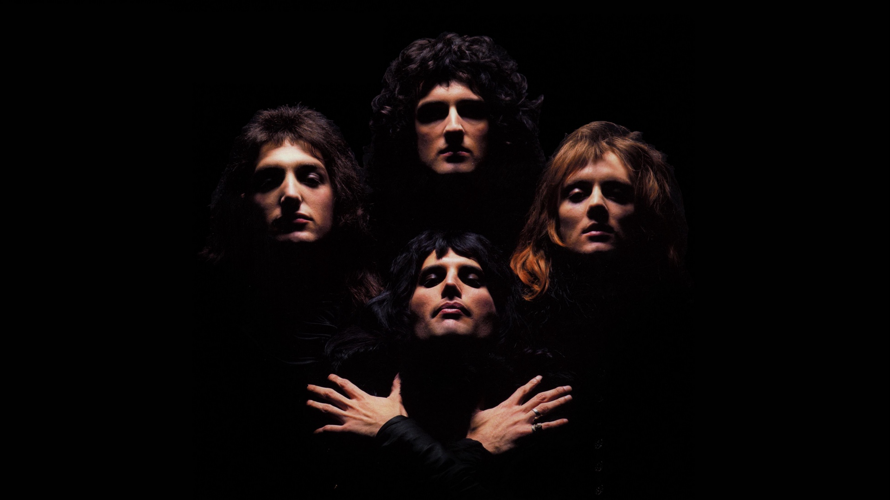

nama : Arya Alviansyah
NIM : A11.2020.12771
Email : 111202012771@mhs.dinus.ac.id
Agama : Islam
Film musically
-

Queen - Bohemian Rhapsody
-

Iconic moment in Wembley Stadium
-
Bohemian Rhapsody | Official Trailer
Biography Film Bohemian Rhapsody
"Bohemian Rhapsody" adalah sebuah lagu oleh band rock asal Inggris, Queen. Lagu tersebut ditulis oleh Freddie Mercury untuk album A Night at the Opera (1975). Lagu ini berdurasi hampir enam menit, yang terdiri dari beberapa bagian tanpa chorus: intro, segmen ballad, sebagian opera, sebagian rock, dan coda reflektif. Lagu ini lebih sering dicatutkan dalam genre progresif rock ala 1970-an. Lagu ini konon dilaporkan sebagai singel yang biaya produksinya paling mahal yang pernah dibuat pada saat peluncurannya, meskipun tidak ada yang dapat menyebut berapa biaya yang tepat dari produksi lagu ini.
Ketika dirilis sebagai single, "Bohemian Rhapsody" menjadi sukses secara komersial, bertahan di puncak tangga lagu UK Singles Chart selama sembilan minggu dan terjual lebih dari satu juta kopi pada akhir Januari 1976. Lagu ini mencapai nomor satu lagi pada tahun 1991 selama lima minggu saat lagu yang sama ini dirilis ulang, dan akhirnya menjadi single terlaris sepanjang masa ke-3 di Inggris Raya. Lagu ini juga satu-satunya lagu yang mencapai lagu Natal nomor satu sebanyak 2 kali oleh seniman yang sama. Lagu ini menduduki puncak tangga lagu di beberapa negara lain juga, termasuk Kanada, Australia, Selandia Baru, Irlandia, dan Belanda,swiss, membuatnya menjadi salah satu singel dengan penjualan terbaik sepanjang masa. Di Amerika Serikat, lagu ini awalnya memuncak di nomor 9 pada tahun 1976. Lalu, kembali ke tangga lagu di nomor dua pada tahun 1992 setelah Freddie Mercury meninggal dunia pada 1991, serta penampilannya dalam film Wayne's World, yang mengembalikan popularitasnya di Amerika Serikat.
Meskipun reaksi kritikus pada awalnya agak beragam, "Bohemian Rhapsody" tetap menjadi salah satu lagu paling populer Queen dan sering ditempatkan di daftar lagu modern terbaik sepanjang masa. Single ini disertai dengan sebuah video promosi, yang banyak ahli menganggapnya sebagai gebrakan. Majalah Rolling Stone menyatakan: "pengaruhnya tidak dapat dilebih-lebihkan, secara praktis telah menciptakan video musik tujuh tahun sebelum MTV mengudara." Pada tahun 2004, "Bohemian Rhapsody" masuk ke dalam Grammy Hall of Fame. Pada tahun 2012, lagu tersebut memuncaki daftar jajak pendapat nasional ITV di Inggris sebagai "Lagu Nomor Satu Favorit Bangsa" sepanjang lebih dari 60 tahun riwayat musik Inggris.